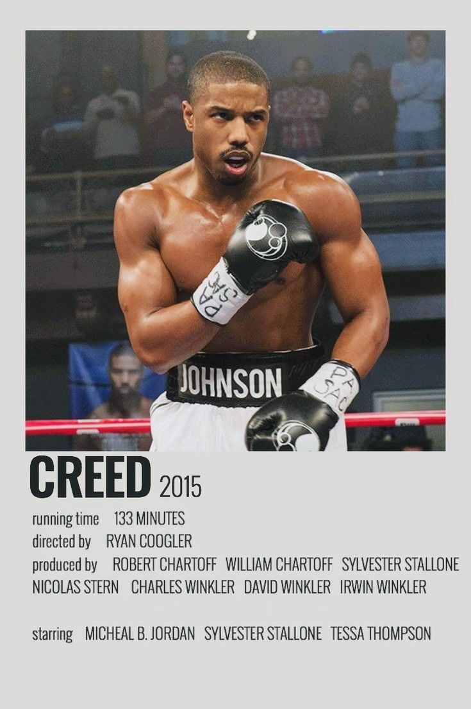
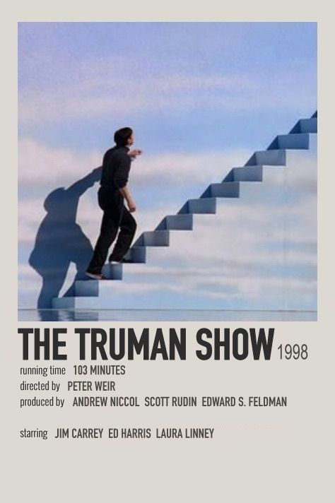
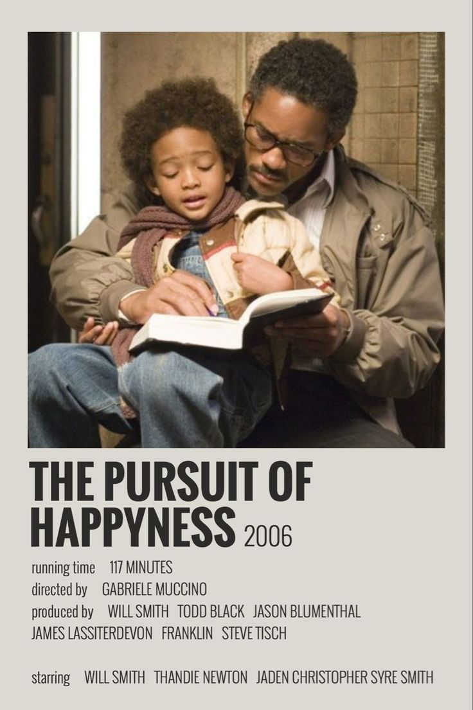
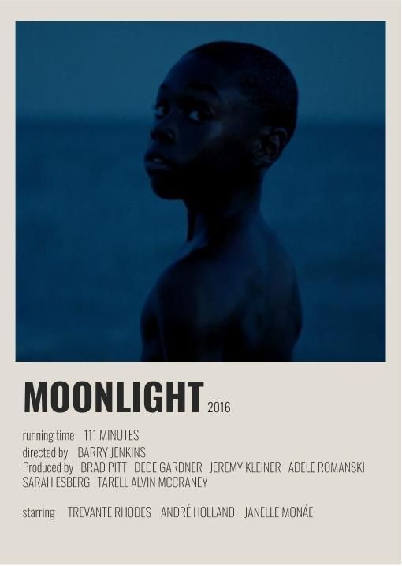

 POSTER.jpg)


A arte é uma forma de expressão humana que envolve a criação de obras visuais, sonoras ou performáticas, com o objetivo de comunicar emoções, ideias ou visões de mundo. Ela pode manifestar-se de várias formas, como pintura, escultura, música, literatura, cinema, dança, entre outras. A arte é subjetiva e pode ter diferentes significados para cada pessoa, sendo usada tanto para provocar reflexões quanto para oferecer beleza e entretenimento. Em sua essência, é uma maneira de explorar e compartilhar experiências humanas e culturais.
Essa arte é uma miniatura do personagem "O.J" do clipe "The Story of O.J" de JAY-Z, que aborda temas como racismo, identidade e ascensão social. O personagem, inspirado em O.J. Simpson, usa uma estética caricata para criticar estereótipos. O clipe reflete sobre a experiência negra nos EUA, e a música faz parte do álbum 4:44.
Essa arte reflete bem a ideia de que "o conhecimento é uma arma". Nas comunidades periféricas, é essencial educar a população para que ela não seja vítima de desinformação e manipulação, garantindo sua autonomia e capacidade crítica. A educação se torna um pilar fundamental para romper ciclos de opressão e abrir caminhos para oportunidades, fortalecendo a luta por justiça social e igualdade.
Esta arte celebra a beleza da cultura negra, destacando seus cabelos, roupas e estilos pessoais únicos. Através de expressões visuais e da conexão entre as pessoas, percebemos como a união fortalece e enriquece essa cultura. Cada detalhe reflete a resistência, o orgulho e a história de um povo que, apesar dos desafios, continua a afirmar sua identidade e beleza com força e dignidade. É uma homenagem à diversidade e à força coletiva da cultura preta.
O "Homem Vitruviano" de Leonardo da Vinci simboliza a harmonia entre o corpo humano e o universo, expressando a ideia de que o ser humano é a medida perfeita de proporção e está no centro de tudo. A obra une ciência, arte e filosofia, refletindo o ideal renascentista de equilíbrio e conexão entre o homem e o cosmos.
A obra "Hércules e Acheloos" retrata o herói mitológico Hércules lutando contra o deus-rio Acheloos, que assume a forma de um touro. A cena simboliza a vitória da força e da perseverança sobre as forças da natureza e do caos. Expressa também o triunfo da civilização sobre o selvagem, sendo uma representação do poder humano em domar e superar os desafios naturais e mitológicos.
Esta obra de arte reflete a cultura da ostentação na comunidade preta, destacando como um simples acessório pode transformar a aparência e a percepção de quem o usa. Mais do que um item de valor material, esses adornos carregam um simbolismo poderoso de status, orgulho e resistência cultural, projetando uma sensação de superioridade e distinção. A ostentação, nesse contexto, não é apenas uma expressão de riqueza, mas também uma afirmação de identidade e sucesso, desafiando estereótipos e celebrando a ascensão social e a beleza negra.
A obra "Prometeu Acorrentado", de Jean-Baptiste-Camille Corot, retrata o titã Prometeu preso e sendo devorado por uma águia, simbolizando sua punição por ter dado o fogo à humanidade. A imagem reflete temas de sacrifício e rebelião, apresentando Prometeu como um herói trágico que enfrenta consequências severas por desafiar os deuses. Assim, a obra evoca uma reflexão sobre os custos do conhecimento, a luta pela liberdade e a relação entre inovação e autoridade.
A obra "Thrive", do artista da Cidade do Cabo, retrata a resiliência e a vitalidade das comunidades urbanas. Com cores vibrantes e elementos dinâmicos, ela captura a energia e a luta diária das pessoas em ambientes desafiadores. A obra celebra a esperança, a união e a força coletiva, destacando a beleza que emerge da vida nas comunidades, mesmo diante das adversidades.